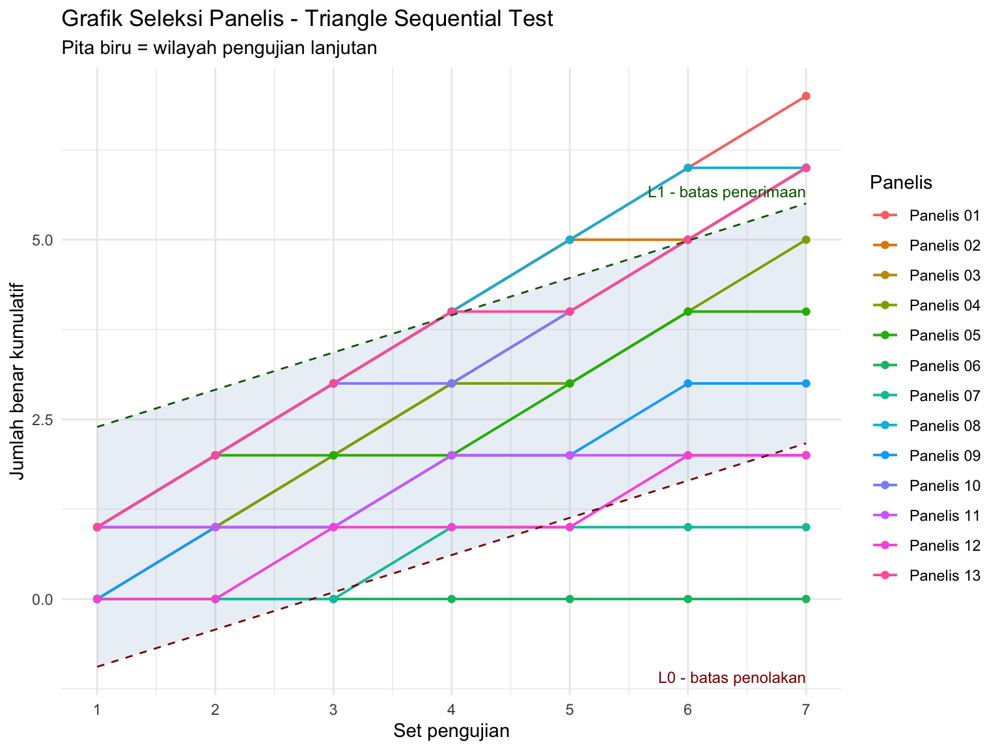
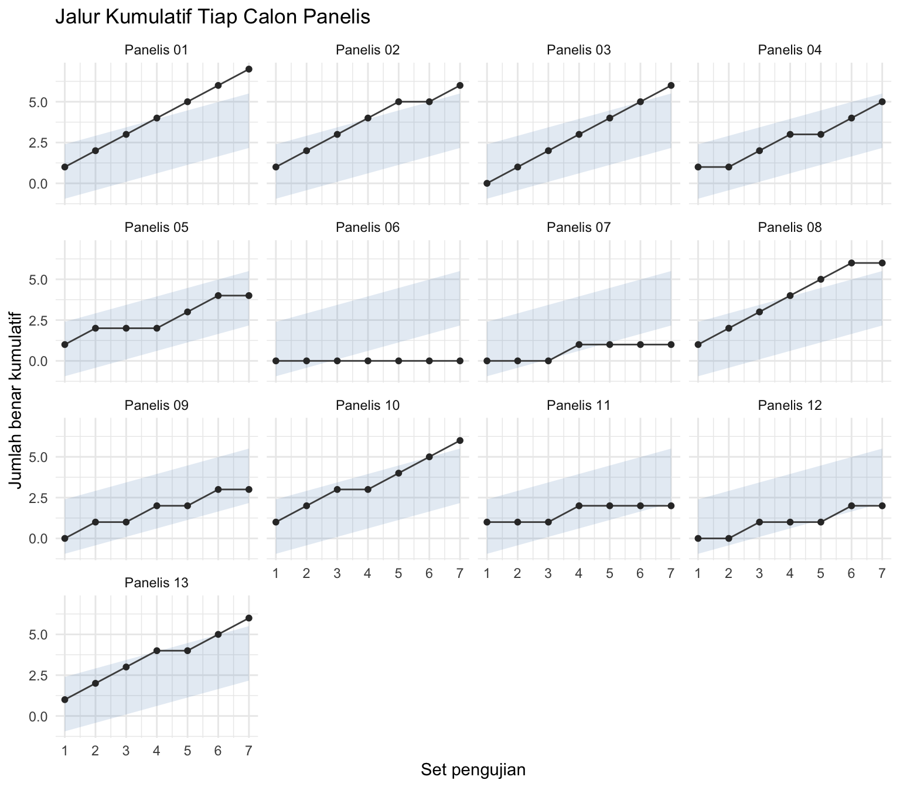

library(ggplot2)
library(dplyr)
library(readxl)3 Seleksi Panelis dengan Triangle Sequential Test
Menentukan panelis diterima, perlu pelatihan, atau ditolak
3.1 Tujuan Pembelajaran
Setelah sesi ini, mahasiswa akan mampu:
| Mengetahui | Memahami | Melakukan |
|---|---|---|
| Prinsip triangle test, sequential test, dan counter balance | Mengapa peluang menebak benar pada triangle test adalah 1/3 | Menghitung jumlah benar kumulatif tiap calon panelis |
| Arti parameter \(\alpha\), \(\beta\), \(p_0\), dan \(p_1\) | Bahwa \(\alpha\) dan \(\beta\) adalah dua jenis kesalahan yang berbeda | Menghitung garis batas \(L_0\) dan \(L_1\) |
| Tiga wilayah keputusan: tolak, lanjut, terima | Mengapa keputusan dapat diambil sebelum set terakhir | Membuat grafik seleksi panelis dan membacanya |
| Kategori panelis diterima, perlu pelatihan, dan ditolak | Bahwa jumlah set membatasi keputusan yang mungkin dicapai | Menyusun rekapitulasi hasil seleksi satu kelompok |
3.2 Sekilas tentang Seleksi Panelis
Acara 3 mengukur kemampuan membedakan panelis pada satu pasang sampel. Acara 4 melangkah lebih jauh: menguji apakah kemampuan itu konsisten bila pengujian diulang berkali-kali, lalu memutuskan apakah calon panelis diterima.
Metodenya menggabungkan tiga hal:
- Triangle test. Panelis menerima tiga sampel berkode acak, dua sama dan satu berbeda, lalu menunjuk sampel yang berbeda. Panelis yang menebak sepenuhnya secara acak akan benar dengan peluang \(1/3\).
- Sequential test. Jumlah pengamatan tidak ditetapkan di muka. Setelah setiap set, hasil kumulatif diplot pada grafik yang terbagi menjadi tiga wilayah: penolakan, pengujian lanjutan, dan penerimaan. Begitu hasil kumulatif memasuki wilayah penolakan atau penerimaan, pengujian panelis tersebut selesai.
- Counter balance. Susunan sampel A dan B diatur agar muncul merata pada tiap posisi, sehingga kecenderungan psikologis memilih sampel di posisi tertentu tidak ikut terukur.
Data yang akan kita gunakan berasal dari seleksi 13 calon panelis dengan 7 set triangle test menggunakan larutan gula.
Untuk setiap set hanya ada dua kemungkinan hasil, sehingga datanya sederhana: satu baris untuk satu panelis × satu set.
| Kolom | Arti |
|---|---|
panelis |
Nama atau kode calon panelis |
set |
Nomor set triangle test, 1 sampai 7 |
benar |
1 jika panelis menunjuk sampel yang berbeda dengan tepat, 0 jika salah |
Data tersimpan pada file acara4_seleksi.xlsx, lembar Data. Lembar Keterangan memuat definisi setiap kolom. Jika Anda ingin menginput data kelompok Anda sendiri, gunakan template_input_acara4.xlsx, isi kolomnya, lalu ganti nama file pada perintah read_excel() di bawah.
3.3 Memuat Data
sel <- as.data.frame(read_excel("assets/data/acara4_seleksi.xlsx",
sheet = "Data"))
sel$panelis <- as.factor(sel$panelis)
str(sel)'data.frame': 91 obs. of 3 variables:
$ panelis: Factor w/ 13 levels "Panelis 01","Panelis 02",..: 1 1 1 1 1 1 1 2 2 2 ...
$ set : num 1 2 3 4 5 6 7 1 2 3 ...
$ benar : num 1 1 1 1 1 1 1 1 1 1 ...head(sel)Think-aloud: “Sebelum menghitung, saya periksa kelengkapan rancangannya dengan
table(sel$panelis, sel$set). Setiap sel harus berisi tepat 1, artinya setiap panelis menyelesaikan setiap set satu kali. Saya juga pastikan kolombenarhanya berisi 0 dan 1, karena nilai lain, misalnya kode untuk panelis yang tidak hadir, akan ikut terhitung sebagai jawaban benar dan menggeser seluruh kesimpulan.”
table(sel$panelis, sel$set)
1 2 3 4 5 6 7
Panelis 01 1 1 1 1 1 1 1
Panelis 02 1 1 1 1 1 1 1
Panelis 03 1 1 1 1 1 1 1
Panelis 04 1 1 1 1 1 1 1
Panelis 05 1 1 1 1 1 1 1
Panelis 06 1 1 1 1 1 1 1
Panelis 07 1 1 1 1 1 1 1
Panelis 08 1 1 1 1 1 1 1
Panelis 09 1 1 1 1 1 1 1
Panelis 10 1 1 1 1 1 1 1
Panelis 11 1 1 1 1 1 1 1
Panelis 12 1 1 1 1 1 1 1
Panelis 13 1 1 1 1 1 1 1table(sel$benar)
0 1
37 54 3.4 Jumlah Benar Kumulatif
Yang diplot pada grafik sekuensial bukan jawaban per set, melainkan jumlah benar kumulatif sampai set tersebut.
sel <- sel %>%
arrange(panelis, set) %>%
group_by(panelis) %>%
mutate(kumulatif = cumsum(benar)) %>%
ungroup() %>%
as.data.frame()
# tampilkan sebagai tabulasi kumulatif seperti pada modul
sel %>%
select(panelis, set, kumulatif) %>%
tidyr::pivot_wider(names_from = set, values_from = kumulatif,
names_prefix = "set_")Mengapa kumulatif, bukan persentase benar? Uji sekuensial menilai bukti yang menumpuk. Panelis yang benar 3 dari 3 set dan panelis yang benar 6 dari 6 set sama-sama berhasil 100%, tetapi bukti pada kasus kedua jauh lebih kuat. Persentase menghapus informasi tentang banyaknya pengamatan, sedangkan jumlah kumulatif mempertahankannya.
3.5 Garis Batas \(L_0\) dan \(L_1\)
Keputusan ditentukan oleh dua garis. \(L_0\) adalah batas maksimal untuk menolak panelis, dan \(L_1\) adalah batas minimal untuk menerima panelis. Keduanya bergantung pada empat parameter:
| Parameter | Arti |
|---|---|
| \(\alpha\) | Peluang menerima panelis yang sebenarnya tidak mampu |
| \(\beta\) | Peluang menolak panelis yang sebenarnya mampu |
| \(p_0\) | Batas kemampuan maksimum panelis untuk ditolak |
| \(p_1\) | Batas kemampuan minimum panelis untuk diterima |
p0 <- 1/3 # peluang benar bila panelis sekadar menebak
p1 <- 0.7 # kemampuan minimum yang dianggap layak diterima
alpha <- 0.05
beta <- 0.1Rumus garis batas (Meilgaard, 2016) mengikuti analisis sekuensial Wald:
\[ L_0 = -h_0 + s \cdot n \qquad\text{dan}\qquad L_1 = h_1 + s \cdot n \]
dengan \(n\) = nomor set, dan ketiga tetapan dihitung sebagai
\[ K = \ln \frac{p_1 (1 - p_0)}{p_0 (1 - p_1)}, \quad s = \frac{1}{K} \ln \frac{1 - p_0}{1 - p_1}, \quad h_0 = \frac{1}{K} \ln \frac{1 - \alpha}{\beta}, \quad h_1 = \frac{1}{K} \ln \frac{1 - \beta}{\alpha} \]
K <- log(p1 * (1 - p0) / (p0 * (1 - p1)))
s <- log((1 - p0) / (1 - p1)) / K
h0 <- log((1 - alpha) / beta) / K
h1 <- log((1 - beta) / alpha) / K
round(c(K = K, s = s, h0 = h0, h1 = h1), 3) K s h0 h1
1.540 0.518 1.461 1.876 n_set <- max(sel$set)
garis <- data.frame(set = 1:n_set)
garis$L0 <- -h0 + s * garis$set
garis$L1 <- h1 + s * garis$set
round(garis, 2)Cara membaca tabel ini:
| Nilai | Artinya |
|---|---|
| \(L_0\) negatif | Belum ada jumlah benar yang cukup rendah untuk menolak. Pada set-set awal, penolakan memang belum mungkin |
| \(L_1\) lebih besar dari \(n\) | Belum ada jumlah benar yang cukup tinggi untuk menerima, walaupun panelis benar semua |
| Kumulatif \(\geq L_1\) | Panelis masuk wilayah penerimaan |
| Kumulatif \(\leq L_0\) | Panelis masuk wilayah penolakan |
| Di antara keduanya | Wilayah pengujian lanjutan |
Perhatikan keterbatasan jumlah set. Dengan parameter di atas, penerimaan paling cepat baru mungkin terjadi pada set ke-5, dan itu pun hanya bila panelis benar pada kelima set. Bila jumlah set diperbanyak, keputusan bisa dicapai untuk lebih banyak panelis; bila \(\alpha\) dan \(\beta\) diperbesar, garisnya merapat sehingga keputusan lebih cepat tercapai tetapi risiko salah putusan naik. Tidak ada pilihan yang bebas dari konsekuensi, jadi nilainya ditetapkan sebelum data dikumpulkan, bukan sesudah melihat hasil.
3.5.1 Hinge Question
Sebelum melanjutkan, jawablah: Seorang calon panelis benar pada set 1 sampai 6, sehingga kumulatifnya melewati \(L_1\) pada set ke-6. Pada set ke-7 ia salah. Apa keputusan yang benar?
- Ditolak, karena set terakhir salah
- Perlu pelatihan, karena hasilnya tidak sempurna
- Diterima, karena keputusan sudah diambil pada set ke-6 dan pengujian untuk panelis itu selesai di sana
- Tidak bisa disimpulkan, karena setnya tidak lengkap
Jawaban: C. Inilah inti kata sequential. Begitu garis batas terlampaui, bukti sudah cukup dan pengujian dihentikan untuk panelis tersebut. Melanjutkan pengujian lalu mengubah keputusan karena hasil berikutnya kurang memuaskan berarti membatalkan jaminan \(\alpha\) dan \(\beta\) yang sudah ditetapkan di awal.
3.6 Menentukan Keputusan
sel <- merge(sel, garis, by = "set")
sel$wilayah <- ifelse(sel$kumulatif >= sel$L1, "Diterima",
ifelse(sel$kumulatif <= sel$L0, "Ditolak",
"Lanjut"))
sel <- sel %>% arrange(panelis, set) %>% as.data.frame()
table(sel$set, sel$wilayah)
Diterima Ditolak Lanjut
1 0 0 13
2 0 0 13
3 0 2 11
4 4 1 8
5 3 3 7
6 6 2 5
7 6 4 3Tabel di atas memperlihatkan bahwa keputusan mulai muncul pada set-set akhir. Selanjutnya kita ambil perlintasan pertama tiap panelis, karena itulah titik pengujian seharusnya dihentikan.
lintas <- sel %>%
filter(wilayah != "Lanjut") %>%
group_by(panelis) %>%
slice_min(set, n = 1, with_ties = FALSE) %>%
ungroup() %>%
select(panelis, set_keputusan = set,
kumulatif_keputusan = kumulatif, keputusan = wilayah) %>%
as.data.frame()
# panelis yang tidak pernah melewati garis mana pun
akhir <- sel %>%
filter(set == n_set) %>%
select(panelis, kumulatif_keputusan = kumulatif) %>%
filter(!panelis %in% lintas$panelis) %>%
mutate(set_keputusan = NA,
keputusan = "Perlu pelatihan") %>%
as.data.frame()
hasil <- rbind(lintas, akhir[, names(lintas)])
hasil$keputusan <- factor(hasil$keputusan,
levels = c("Diterima", "Perlu pelatihan",
"Ditolak"))
hasil <- hasil %>% arrange(keputusan, panelis) %>% as.data.frame()
hasiltable(hasil$keputusan)
Diterima Perlu pelatihan Ditolak
6 3 4 Think-aloud: “Saya membaca kolom
set_keputusansebagai informasi tambahan, bukan pelengkap tabel. Panelis yang diterima pada set ke-5 memberi bukti lebih kuat daripada panelis yang baru diterima pada set ke-7, walaupun keduanya berstatus diterima. Kalau nanti saya harus memilih sebagian saja untuk panel inti, kolom inilah yang saya pakai untuk mengurutkan.”
3.7 Grafik Seleksi Panelis
ggplot(sel, aes(x = set, y = kumulatif)) +
geom_ribbon(data = garis, inherit.aes = FALSE,
aes(x = set, ymin = L0, ymax = L1),
fill = "steelblue", alpha = 0.12) +
geom_line(aes(group = panelis, colour = panelis), linewidth = 0.7) +
geom_point(aes(colour = panelis), size = 1.6) +
geom_line(data = garis, aes(x = set, y = L0),
linetype = "dashed", colour = "darkred") +
geom_line(data = garis, aes(x = set, y = L1),
linetype = "dashed", colour = "darkgreen") +
annotate("text", x = n_set, y = max(garis$L1), hjust = 1, vjust = -0.6,
label = "L1 - batas penerimaan", colour = "darkgreen", size = 3.2) +
annotate("text", x = n_set, y = min(garis$L0), hjust = 1, vjust = 1.4,
label = "L0 - batas penolakan", colour = "darkred", size = 3.2) +
scale_x_continuous(breaks = 1:n_set) +
labs(title = "Grafik Seleksi Panelis - Triangle Sequential Test",
subtitle = "Pita biru = wilayah pengujian lanjutan",
x = "Set pengujian", y = "Jumlah benar kumulatif",
colour = "Panelis") +
theme_minimal()
Grafik dengan 13 garis sekaligus memang padat. Untuk laporan, biasanya lebih terbaca bila dipisah per panelis:
ggplot(sel, aes(x = set, y = kumulatif)) +
geom_ribbon(data = garis, inherit.aes = FALSE,
aes(x = set, ymin = L0, ymax = L1),
fill = "steelblue", alpha = 0.15) +
geom_line(colour = "grey30") +
geom_point(colour = "grey20", size = 1.4) +
facet_wrap(~ panelis) +
scale_x_continuous(breaks = 1:n_set) +
labs(title = "Jalur Kumulatif Tiap Calon Panelis",
x = "Set pengujian", y = "Jumlah benar kumulatif") +
theme_minimal()
Cara membaca grafik ini:
| Yang Anda lihat | Artinya |
|---|---|
| Garis keluar ke atas pita | Panelis diterima pada set tersebut |
| Garis keluar ke bawah pita | Panelis ditolak pada set tersebut |
| Garis bertahan di dalam pita sampai set terakhir | Belum ada keputusan, panelis perlu pelatihan dan seleksi ulang |
| Garis mendatar | Panelis salah pada set tersebut |
| Kemiringan garis 45 derajat | Panelis benar pada semua set di rentang itu |
Penting! Grafik ini menilai konsistensi, bukan sekadar banyaknya jawaban benar. Panelis yang benar pada set 1, 2, 3 lalu salah pada set 5, 6, 7 punya kumulatif akhir yang sama dengan panelis yang benar-salah bergantian, tetapi pola keduanya berbeda. Pola seperti yang pertama sering menunjukkan kelelahan indra atau adaptasi terhadap rasa, dan itu informasi yang layak dicatat pada pembahasan laporan, bukan dibuang.
3.8 Menyusun Kesimpulan
Kesimpulan Acara 4 yang baik menjawab tiga pertanyaan berurutan:
- Parameter uji \(\rightarrow\) berapa nilai \(\alpha\), \(\beta\), \(p_0\), \(p_1\) yang dipakai, dan berapa \(L_0\) serta \(L_1\) yang dihasilkan?
- Hasil per panelis \(\rightarrow\) berapa panelis diterima, berapa perlu pelatihan, berapa ditolak?
- Kecukupan panel \(\rightarrow\) apakah jumlah panelis yang diterima memadai untuk pengujian deskriptif pada Acara 7 dan 8?
Latihan menulis: Susun satu paragraf (4–6 kalimat) yang menjawab ketiga pertanyaan di atas untuk data kelompok Anda. Sebutkan nilai \(L_0\) dan \(L_1\) pada set terakhir sebagai pendukung kalimat, bukan sebagai isi utamanya.
3.9 Latihan (You Do)
3.9.1 Latihan 1: Mengubah Parameter Uji
- Jalankan ulang perhitungan garis batas dengan \(\alpha = \beta = 0{,}10\):
alpha2 <- 0.10
beta2 <- 0.10
h0_2 <- log((1 - alpha2) / beta2) / K
h1_2 <- log((1 - beta2) / alpha2) / K
data.frame(set = 1:n_set,
L0 = -h0_2 + s * (1:n_set),
L1 = h1_2 + s * (1:n_set))- Pita wilayah lanjutan menjadi lebih sempit atau lebih lebar? Apakah jumlah panelis yang memperoleh keputusan bertambah? Apa harga yang dibayar untuk keputusan yang lebih cepat itu?
3.9.2 Latihan 2: Rekapitulasi untuk Laporan
Buat tabel rekapitulasi beserta persentasenya:
hasil %>%
count(keputusan, .drop = FALSE) %>%
mutate(persen = round(100 * n / sum(n), 1))Daftar panelis yang diterima inilah yang dibawa ke Acara 7 dan 8.
3.9.3 Latihan 3: Challenges
- Uji satu panelis secara terpisah dengan uji binomial satu sisi, dengan hipotesis nol bahwa ia hanya menebak (\(p = 1/3\)):
benar_p01 <- sum(subset(sel, panelis == "Panelis 01")$benar)
binom.test(benar_p01, n = n_set, p = 1/3, alternative = "greater")Bandingkan kesimpulannya dengan keputusan sekuensial. Mengapa kedua pendekatan bisa memberi hasil berbeda, dan mana yang sesuai dengan rancangan praktikum ini?
- Hitung berapa set minimum yang dibutuhkan agar penerimaan mungkin terjadi, yaitu set terkecil dengan \(L_1 \leq n\):
n_coba <- 1:20
min(n_coba[(h1 + s * n_coba) <= n_coba])- Hitung proporsi jawaban benar pada tiap set untuk seluruh panelis. Apakah ada set yang jauh lebih sulit daripada yang lain, dan apa dugaan penyebabnya bila dilihat dari urutan penyajian dan waktu istirahat setelah set ke-4?
sel %>%
group_by(set) %>%
summarise(proporsi_benar = round(mean(benar), 2))3.10 Ringkasan
Dalam sesi ini kita telah mempelajari:
- Gabungan triangle test, sequential test, dan counter balance sebagai metode seleksi panelis
- Peluang menebak benar pada triangle test sebesar \(1/3\), yang menjadi dasar penetapan \(p_0\)
- Arti \(\alpha\) dan \(\beta\) sebagai dua jenis kesalahan yang berbeda arah
- Perhitungan garis batas \(L_0 = -h_0 + s n\) dan \(L_1 = h_1 + s n\) beserta tetapan \(K\), \(s\), \(h_0\), dan \(h_1\)
- Tiga wilayah keputusan, dan mengapa keputusan diambil pada perlintasan pertama
- Bahwa jumlah set dan pilihan \(\alpha\) serta \(\beta\) menentukan keputusan mana yang mungkin dicapai
- Pembacaan grafik sekuensial sebagai penilaian konsistensi, bukan sekadar jumlah jawaban benar